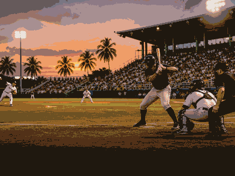

baseball event view
Caribbean Series
Caribbean Series keeps the evergreen overview and current edition details together in this framed event view.
FrequencyRecurring
Current edition2027
Main cityMexico City
FormatBaseball event view
History viewEdition details in one place
Use the year switcher for recent editions. Date, venue, ticket and programme updates stay inside the same event URL.

More BaseballInterested in more baseball?Explore related events, places and calendar moments.